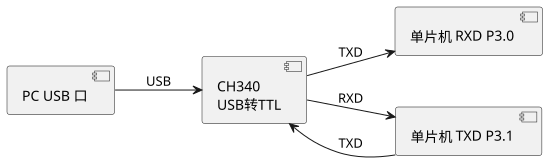

第 10 章 串行通信
学习目标
- 理解同步/异步、单工/半双工/全双工等串行通信基本概念
- 掌握 MCS-51 串口结构及 SCON、SBUF、PCON 寄存器各位含义
- 熟练运用串口四种工作方式（方式 0/1/2/3）及其配置
- 掌握波特率计算公式，能使用 T1 或 T2 产生精确波特率
- 能够编写单片机与 PC、双机及多机通信程序
10.1 串行通信基础
串行通信（Serial Communication）是指数据以一位一位顺序传送的方式进行通信，相比并行通信只需少量信号线即可长距离传输。STC 8位单片机内置一个全双工异步串行通信接口（UART），引脚为 TXD（P3.1，发送）和 RXD（P3.0，接收）。
10.1.1 同步与异步通信
| 对比项 | 同步通信（Synchronous） | 异步通信（Asynchronous） |
|---|---|---|
| 时钟 | 收发共一根时钟线 | 无时钟线，靠起始位/停止位 |
| 帧格式 | 连续数据块 | 以字符为单位，每字符 10/11 位 |
| 效率 | 高 | 较低（每帧含起止位开销） |
| 典型接口 | SPI、I2C、USB | UART、RS-232、RS-485 |
| 典型速率 | 数 MHz ~ 数百 MHz | 9600 bps ~ 数 Mbps |
10.1.2 数据传输方向
| 模式 | 方向 | 典型应用 |
|---|---|---|
| 单工（Simplex） | 单向 | 广播、红外遥控 |
| 半双工（Half-Duplex） | 双向分时 | RS-485、对讲机 |
| 全双工（Full-Duplex） | 双向同时 | RS-232、以太网 |
10.1.3 异步串行帧格式
异步通信每一字符帧由起始位（1 位低电平）+ 数据位（5~9 位）+ 校验位（可选 1 位）+ 停止位（1/1.5/2 位高电平）组成。空闲时数据线为高电平，起始位的下降沿通知接收方开始采样。最常用配置为"8N1"：8 位数据、无校验、1 位停止位，共 10 位/字符。
查看 PlantUML 源码
@startuml
skinparam defaultFontName "Microsoft YaHei"
left to right direction
component "空闲高电平" as IDLE
component "起始位 0" as START
component "数据位 D0" as D0
component "数据位 D1" as D1
component "数据位 D2..D7" as D7
component "校验位 可选" as PAR
component "停止位 1" as STOP
component "空闲或下一帧" as IDLE2
IDLE --> START
START --> D0
D0 --> D1
D1 --> D7
D7 --> PAR
PAR --> STOP
STOP --> IDLE2
@enduml10.2 MCS-51 串口结构
MCS-51 串口由发送 SBUF、接收 SBUF、串口控制寄存器 SCON、波特率发生器（T1 或 T2）和输入移位寄存器组成。两个 SBUF 共用同一字节地址 99H：写 SBUF 启动发送，读 SBUF 读取接收到的数据。
10.2.1 SCON 寄存器（串口控制）
SCON（Serial Control，串口控制寄存器）字节地址 98H，可位寻址，各位定义：
| 位 | 符号 | 含义 |
|---|---|---|
| D7 | SM0 | 工作方式选择位（与 SM1 配合） |
| D6 | SM1 | 工作方式选择位 |
| D5 | SM2 | 多机通信使能：方式 2/3 时，=1 仅接收 RB8=1 的帧（地址帧） |
| D4 | REN | 允许接收控制：1=允许；0=禁止 |
| D3 | TB8 | 方式 2/3 时发送的第 9 位数据（常用作奇偶校验或地址/数据标志） |
| D2 | RB8 | 方式 2/3 时接收的第 9 位数据 |
| D1 | TI | 发送中断标志：发送完一帧硬件置 1，需软件清 0 |
| D0 | RI | 接收中断标志：接收完一帧硬件置 1，需软件清 0 |
10.2.2 PCON 寄存器（电源控制）
PCON（Power Control，电源控制寄存器）字节地址 87H，不可位寻址。其最高位 SMOD 与波特率相关：
- SMOD（D7）：波特率倍增位。SMOD=1 时，方式 1/2/3 波特率加倍。
- 其余位 GF1、GF0、PD、IDL 与节电模式相关。
10.3 四种工作方式
通过 SCON 的 SM0、SM1 可将串口配置为 4 种工作方式：
| SM0 SM1 | 方式 | 帧格式 | 波特率 | 典型用途 |
|---|---|---|---|---|
| 00 | 方式 0 | 8 位数据（无起止位） | $f_{osc}/12$（固定） | 同步移位寄存器，扩展 IO |
| 01 | 方式 1 | 10 位（起+8 数+止） | 由 T1/T2 决定（可变） | 最常用，与 PC 通信 |
| 10 | 方式 2 | 11 位（起+8 数+第 9 位+止） | $2^{\text{SMOD}} \cdot f_{osc}/64$（固定） | 多机通信 |
| 11 | 方式 3 | 11 位（同方式 2） | 由 T1/T2 决定（可变） | 多机通信，可变波特率 |
10.3.1 方式 1（最常用）
方式 1 是 10 位异步通信：1 位起始位 + 8 位数据位 + 1 位停止位，波特率由 T1 模式 2 自动重装产生，是单片机与 PC、模块通信的首选方式。
10.3.2 方式 2、3 与多机通信
方式 2、3 增加 1 位"第 9 数据位"（TB8/RB8），常用于多机通信：发送方以 TB8=1 表示地址帧、TB8=0 表示数据帧；接收方 SM2=1 时只接收地址帧，与本机地址匹配后清 SM2 接收数据帧，实现一主多从通信。
10.4 波特率计算
方式 1、3 的波特率由 T1（或 T2）作为波特率发生器产生。T1 通常工作于模式 2（8 位自动重装），波特率公式为：
$$\text{波特率} = \frac{2^{\text{SMOD}}}{32} \cdot \frac{f_{osc}}{12 \cdot (256 - \text{TH1})}$$
反过来求 T1 重装值：
$$\text{TH1} = 256 - \frac{2^{\text{SMOD}} \cdot f_{osc}}{384 \cdot \text{波特率}}$$
10.4.1 常用波特率重装值表
下表给出 11.0592 MHz 晶振、SMOD=0 时常用波特率对应的 T1 重装值（与 STC-ISP 软件波特率计算器一致）：
| 波特率 | 晶振 | SMOD | TH1 重装值 | 实际波特率 | 误差 |
|---|---|---|---|---|---|
| 9600 | 11.0592 MHz | 0 | 0xFD (253) | 9600 | 0% |
| 19200 | 11.0592 MHz | 0 | 0xFD (253) | 19200 | 0% |
| 4800 | 11.0592 MHz | 0 | 0xFA (250) | 4800 | 0% |
| 2400 | 11.0592 MHz | 0 | 0xF4 (244) | 2400 | 0% |
| 9600 | 12 MHz | 0 | 0xFD (253) | 10416 | 8.5% |
10.5 串口与 PC 通信
由于 PC 已普遍不带 RS-232 串口，常用 USB 转串口芯片（CH340、CP2102、FT232、PL2303）将单片机 TTL 电平（3.3V/5V）转为 USB 虚拟串口。CH340 是国产方案，价格低廉、稳定性好，是国内教学板的主流选择。

查看 PlantUML 源码
@startuml
skinparam defaultFontName "Microsoft YaHei"
left to right direction
component "PC USB 口" as PC
component "CH340\nUSB转TTL" as CHIP
component "单片机 RXD P3.0" as RXD_MCU
component "单片机 TXD P3.1" as RXD_MCU_MCU2
PC --> CHIP : USB
CHIP --> RXD_MCU : TXD
RXD_MCU_MCU2 --> CHIP : TXD
CHIP --> RXD_MCU_MCU2 : RXD
@endumlPC 端使用串口调试助手（如 STC-ISP 自带、SSCOM、友善串口调试助手）即可发送和接收数据。下面给出 STC 与 PC 通信的完整收发示例（11.0592 MHz，9600 bps，8N1，方式 1）：
#include <reg52.h>
void UART_Init(void)
{
PCON &= 0x7F; // SMOD=0
SCON = 0x50; // 方式 1，REN=1 允许接收
TMOD &= 0x0F;
TMOD |= 0x20; // T1 模式 2 自动重装
TH1 = 0xFD; // 9600 bps @11.0592MHz
TL1 = 0xFD;
ET1 = 0; // T1 仅作波特率发生，不中断
TR1 = 1; // 启动 T1
ES = 1; // 允许串口中断
EA = 1; // 开总中断
}
void UART_SendByte(unsigned char dat)
{
SBUF = dat; // 写 SBUF 启动发送
while (!TI); // 等待发送完成
TI = 0; // 软件清 TI
}
void main(void)
{
UART_Init();
UART_SendByte('H');
UART_SendByte('i');
UART_SendByte('\r');
UART_SendByte('\n');
while (1) { /* 主循环 */ }
}
void UART_ISR(void) interrupt 4
{
if (RI) { // 接收完成
RI = 0; // 清 RI
unsigned char c = SBUF; // 读取接收数据
SBUF = c; // 回显给 PC
while (!TI); TI = 0;
}
if (TI) { // 发送完成
TI = 0;
}
}
10.5.1 标准 printf 函数实现（Keil C51）
前面用 UART_SendByte() 逐字节发送的方式在调试时不够直观——开发人员希望像 PC 上那样用 printf("count=%d, temp=%.1f\r\n", n, t); 一次输出格式化字符串。Keil C51 标准库 stdio.h 已经提供 printf 函数，但它底层调用 putchar() 这个可重写的钩子函数——只要我们把 putchar() 改写为"写 SBUF + 等待 TI"，printf 的所有输出就会自动重定向到串口。
实现原理：C 库 printf → putchar(char c) → 写 SBUF 启动发送 → 等待 TI 置位 → 清 TI。整条调用链不动 printf 本身，只重写最底层的 putchar，这种"钩子函数重定向"是嵌入式 C 库的通用做法。
实现步骤：
- 初始化串口：按 10.4 节方法配置 SCON/T1，使 9600 bps 8N1 收发就绪（必须先初始化再调用 printf，否则
putchar会卡死在while(!TI)）。 - 包含头文件：在 main.c 顶部
#include <stdio.h>，引入printf与putchar声明。 - 重写 putchar：定义一个全局函数
char putchar(char c)，函数体里把字符写入 SBUF，等 TI 后清零。注意 Keil C51 要求 putchar 写成char putchar(char c)（不是 void），且必须为非可重入的全局函数。 - 处理换行符：终端期望
\n同时回车换行，故 putchar 内若检测到'\n'，应先输出'\r'，避免 PC 端串口助手显示"阶梯状"错位。 - 关闭"使用 MicroLIB"以外的优化问题：Keil C51 默认链接完整 C 库，
printf占用约 1KB Flash 与 30B data；若代码空间紧张可在 Project → Options → Target 勾选 "Use MicroLIB" 减半体积，但 MicroLIB 不支持%f浮点格式。 - 验证：在 main 中调用
printf("Hello, STC!\r\n");，PC 端串口助手设 9600 8N1 应能收到字符串。
/* main.c - STC89C52RC printf 重定向完整示例
* 晶振 11.0592 MHz，波特率 9600 bps 8N1
* 编译环境：Keil C51 v5
*/
#include <reg52.h>
#include <stdio.h> /* 引入 printf 与 putchar 声明 */
/* ---------- 1. 串口初始化 ---------- */
void UART_Init(void)
{
PCON &= 0x7F; /* SMOD=0 */
SCON = 0x50; /* 方式 1，REN=1 */
TMOD &= 0x0F;
TMOD |= 0x20; /* T1 模式 2 自动重装 */
TH1 = 0xFD; /* 9600 @11.0592MHz */
TL1 = 0xFD;
ET1 = 0;
TR1 = 1; /* 启动 T1 */
ES = 1; /* 允许串口中断（接收用） */
EA = 1;
}
/* ---------- 2. 重写 putchar 钩子（关键步骤） ----------
* Keil C51 规定 putchar 原型为 char putchar(char)
* printf 内部循环调用 putchar 输出每一个字符
*/
char putchar(char c)
{
if (c == '\n') { /* 自动回车，避免阶梯状显示 */
SBUF = '\r';
while (!TI);
TI = 0;
}
SBUF = c; /* 写 SBUF 启动发送 */
while (!TI); /* 等待发送完成 */
TI = 0; /* 软件清 TI */
return c;
}
/* ---------- 3. 主程序：使用 printf ---------- */
unsigned char count = 0;
void main(void)
{
UART_Init(); /* 必须先初始化再 printf */
printf("================================\r\n");
printf(" STC89C52RC 串口 printf 演示\r\n");
printf(" 编译时间: %s %s\r\n", __DATE__, __TIME__);
printf("================================\r\n");
while (1) {
count++;
printf("第 %bu 次循环, TH0=0x%02X\r\n", count, TH0);
/* %bu 是 C51 特有：unsigned char 十进制
%02X 是 2 位 16 进制，不足补 0 */
/* 此处用软件延时 */
unsigned int i, j;
for (i = 0; i < 1000; i++)
for (j = 0; j < 200; j++);
}
}
- 未初始化就 printf：
putchar卡在while(!TI)，程序假死。务必先调UART_Init()。 - 使用 %f 浮点格式：默认 C 库不支持，需在 Project → Options → Target 勾选 "Use MicroLIB" 或在 Linker → Misc 控制中加
?C?LIB_CODE浮点库；勾选 MicroLIB 后printf体积减半但失去 %f 支持。 - 中断里调用 printf：printf 不可重入，在中断服务程序中调用会导致输出错乱，应改为在中断中置标志，主循环中打印。
- %bu / %bd：C51 特有格式符，分别表示
unsigned char/signed char十进制，避免 8 位变量被提升为 int 再 %d 打印。 - TI 误清：若中断里也清 TI，
putchar的轮询会异常，建议发送侧不用中断（ES=1仅服务接收）。
printf("count=%bu\r\n", n) 约 14 字节耗时 14 ms。对实时性要求高的循环应减少 printf 调用或提高到 115200 bps（11.0592 MHz 支持）。
10.6 双机通信与多机通信
10.6.1 双机通信
两片 STC 直接 TXD↔RXD 交叉连接、GND 共地即可双机点对点通信。注意双方波特率必须一致，且最好协议层约定帧头、长度、校验，以提高可靠性。
10.6.2 多机通信
采用一主多从总线拓扑：主机 TXD 接所有从机 RXD，所有从机 TXD 经线与后接主机 RXD。利用方式 2/3 的第 9 位与 SM2 实现寻址：
- 所有从机初始 SM2=1，只接收 RB8=1 的地址帧；
- 主机发送地址帧（TB8=1），所有从机接收并比较；
- 被寻址从机清 SM2=0，接收后续数据帧（TB8=0），处理完毕后重新置 SM2=1；
- 未被寻址从机继续忽略数据帧。
多机通信典型协议帧格式：
| 帧类型 | 第 9 位 TB8 | 数据内容 |
|---|---|---|
| 地址帧 | 1 | 1 字节从机地址（0x01~0xFE） |
| 命令帧 | 0 | 命令字 + 参数 |
| 数据帧 | 0 | N 字节数据 + 校验和 |
下面是从机响应主机寻址的简化示例：
#include <reg52.h>
#define MY_ADDR 0x02
unsigned char sm2_flag = 1;
void UART_Init(void)
{
SCON = 0xF8; // 方式 3，SM2=1，REN=1，TB8=1
TMOD = (TMOD & 0x0F) | 0x20;
TH1 = 0xFD; // 9600 @11.0592MHz
TL1 = 0xFD;
TR1 = 1;
ES = 1; EA = 1;
}
void UART_ISR(void) interrupt 4
{
if (RI) {
RI = 0;
unsigned char c = SBUF;
if (SCON & 0x04) { // RB8=1，地址帧
if (c == MY_ADDR) {
SM2 = 0; // 被寻址，准备接收数据帧
SBUF = MY_ADDR; // 回复本机地址确认
while (!TI); TI = 0;
}
} else { // RB8=0，数据帧
// 处理数据...
if (c == 0xFF) SM2 = 1; // 结束帧，重新只接收地址
}
}
}
本章小结
- 串行通信分同步/异步、单工/半双工/全双工，UART 是最常用的异步全双工方式。
- MCS-51 串口由 SBUF、SCON、PCON 与波特率发生器（T1/T2）构成，方式 1（10 位异步）是与 PC 通信最常用方式。
- 方式 2、3 通过第 9 位（TB8/RB8）与 SM2 实现多机通信寻址。
- 波特率公式 $\text{波特率} = \frac{2^{\text{SMOD}}}{32} \cdot \frac{f_{osc}}{12 \cdot (256 - \text{TH1})}$ 是核心，11.0592 MHz 晶振可消除波特率误差。
- 与 PC 通信常通过 CH340 等 USB 转串口芯片，PC 端用串口调试助手收发数据。
- 通过重写
putchar钩子函数可让 Keil C51 标准库printf输出到串口，支持%bu %02X %s等格式；MicroLIB 可减半体积但失去%f浮点支持。 - 双机通信直接 TXD/RXD 交叉；多机通信利用地址帧/数据帧 + SM2 实现一主多从寻址。
思考题与习题
- 简述同步通信与异步通信的区别，并各举两个典型接口例子。
- SCON 中 SM2、REN、TB8、RB8 各位的作用是什么？在多机通信中如何使用？
- 晶振 11.0592 MHz，使用 T1 模式 2 产生 9600 bps 波特率，计算 TH1 重装值（要求 SMOD=0）。
- 为什么 12 MHz 晶振下 9600 bps 通信会出错？请计算误差百分比。
- 编写程序：单片机串口收到 PC 发来的字节后，将该字节 +1 回发给 PC（11.0592 MHz，9600 bps，方式 1）。
- 简述多机通信的工作过程，并说明主机如何指定某从机接收数据。
参考文献
- 张毅刚. 单片机原理及应用——C51 编程 + Proteus 仿真（第 4 版）[M]. 北京：高等教育出版社, 2021.
- STC 官方. STC89C52RC 数据手册 [Z]. 2024. https://www.stcmcudata.com/
- 郭天祥. 新概念 51 单片机 C 语言教程 [M]. 北京：电子工业出版社, 2018.
- 何立民. 单片机高级教程——应用与设计（第 3 版）[M]. 北京：北京航空航天大学出版社, 2018.
- I. Scott MacKenzie. The 8051 Microcontroller (4th Edition) [M]. Pearson, 2006.